延续“三金旋 · 晶核”：暗底、暖金属渐变、紧贴核心的旋臂、发光的 AI 核。改用五条旋臂，避开三曲纹结构。旋臂是矿业积累下来的金属，核心是 AI；金属托住核心，核心带动整个星系旋转。矿业是 AI 的根基，AI 引领矿业。

定制“AI矿策”字标；做构建图、最小尺寸和安全区；相似图形检索；从主 SVG 生成网站图标（scripts/brand-icons.ts）。
docs/design/reader-redesign-202611/brand/galaxy-s2 · 2026-11-04